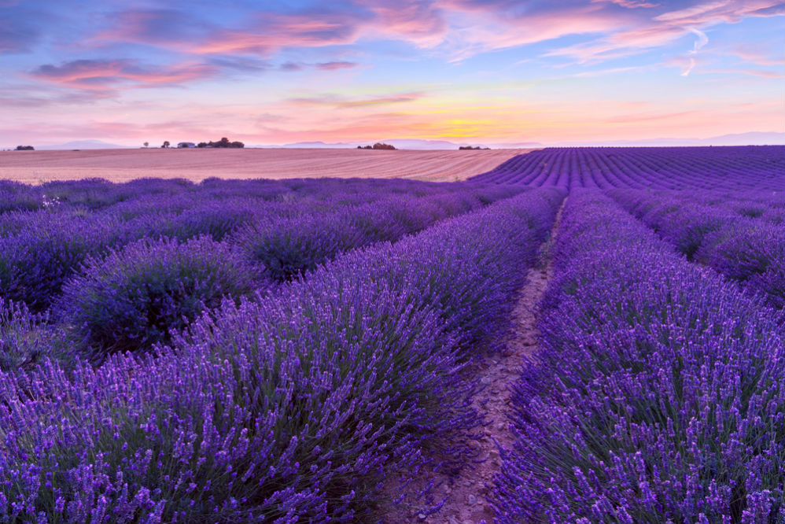
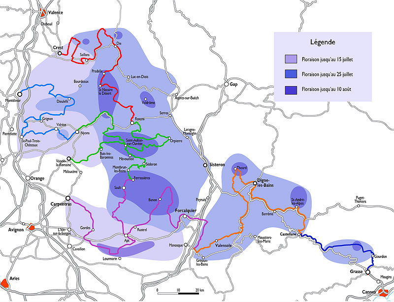
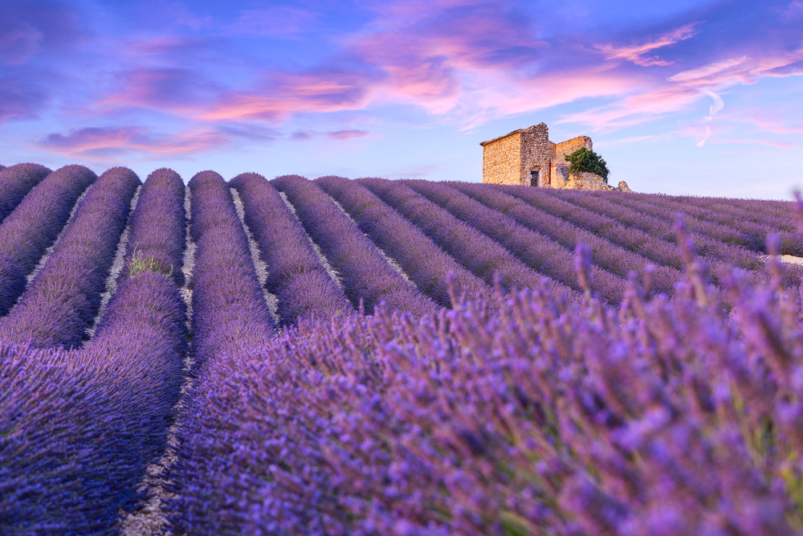
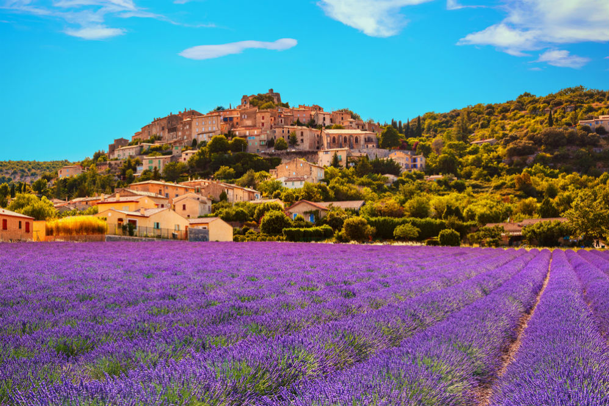
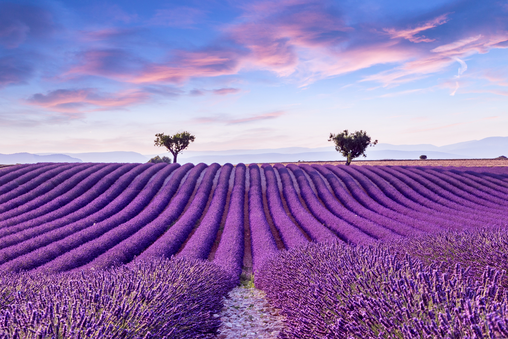

З кінця червня , коли лаванда зацвітає, і до початку серпня , коли її збирають. Період цвітіння залежить від погоди і території, де вона росте. Нижче ви знайдете карту цвітіння лавандових полів, на ній світло-фіолетовим позначені поля, квітучі з кінця червня до 15 липня, синім - ті, що цвітуть з початку і до 25 липня, і темно-фіолетовим - поля, які цвітуть з початку липня до 10 серпня. Помаранчевим помічені великі міста регіону - Канни, Авіньйон, Арль, Валанс. У кожному з міст ми радимо відвідати туристичний офіс (Office de tourisme) і взяти там детальну карту лавандових полів, яку оновлюють щороку. Там же ви зможете дізнатися про місцеві святах, ярмарках і фестивалях.

На автомобілі . Оренда машини - найзручніше рішення, адже до більшості полів не ходять ні поїзда, ні автобуси. А на автомобілі ви зможете скласти свій маршрут або проїхати по одній з доріг, які проходять по найкрасивішим полями й горами, з зупинками в середньовічних селах і замках. Стартувати найкраще з Ніцци або Марселя. Доба оренди автомобіля з механічною коробкою передач обійдуться від 1 700 рублів. Громадський транспорт . На поїзді можна доїхати з Парижа або Марселя до Авіньйона, звідки туристичні компанії організовують одноденні маршрути на автобусі по лавандовим полях. Також з Авіньйона ходить електричка до Карпентрас, де можна сісти на автобус Карпентра - Со (Carpentras - Sault), який йде через лавандові поля в старовинне місто Со. Велосипедні маршрути по лавандовим полях стають все популярнішими, але вони підходять тільки людям з хорошою фізичною підготовкою, адже Прованс - це пагорби і гори, а середня температура влітку - 30-35 ° С.

Головні лавандові поля зосереджені в трьох регіонах Провансу: Альпи Верхнього Провансу, Воклюзі і Верхніх Альпах. . У багатьох містах є туристичні асоціації, що пропонують піші та велосипедні прогулянки. Вся інформація про шести Дорогах лаванди (Routes de la lavande) англійською доступна на сайті асоціації MoveYourAlps (оффлайн- і онлайн-карти, інформація про свята, визначні пам'ятки, готелях і кемпінгах).

- Рівнини і парфумерні заводи району Веркором, Діуа і Дром Провансаль (Vercors, Diois, Drôme Provençal) , де лаванда цвіте з кінця червня до кінця липня. Їдьте від Хрест (Crest) до барона (Baronnies), через поля в околицях Ді (Die) і Розан (Rosans), де дорога йде по невисоких горах, повз плато з полями лаванди. Дром Провансаль славиться не тільки лавандою, а й середньовічними селами Дьyoлефі, Гріньон і Вальреас (Dieulefit, Grignon, Valréas). - Пагорби і гори в районі Дром, Воклюз, Альпи Верхнього Провансу (Drôme, Vaucluse, Alpes de Haute Provence) . З червня до середини липня Лаванда цвіте на десятках полів навколо гірських сіл Везон-ла-Ромен, Ньон, БЮІ-Ле-барона, Орп'єрр, Розан (Vaison-la-Romaine, Nyons, Buis-les-Baronnies, Orpierre, Rosans). - Гори, охряной каньйон і середньовічний замок в районі Венту, Люр і Люберон (Ventoux, Lure, Luberon) . Містечка Гордий (Gordes) і АПТ (Apt) оточені полями, там продають лавандовий мед, а величезний каньйон охри Рюстрель (Rustrel) називають провансальської Колорадо через його марсіанських пейзажів. Ми радимо побувати там на світанку або на заході, коли стіни каньйону сяють усіма відтінками червоного. Поруч з каньйоном знаходиться середньовічний замок Мане (chateau Mane), а біля підніжжя білих гір Люр (Lure) росте сама ароматна гірська лаванда. - спуск з гір до Лазурному березі в районі Грасса і Валенсоля (Grasse et Valensole) . Спустіться з величезного плато Валенсоль, цілком покритого лавандою, через Мезель (Mézel) і Баррі (Barèmme) до Кастеллан (Castellane), поруч з яким лежить долина лаванди Арьюбі (Artuby). Маршрут закінчується в Грасі (Grasse) - парфумерної столиці Франції. Тут лаванда цвіте до середини серпня.
